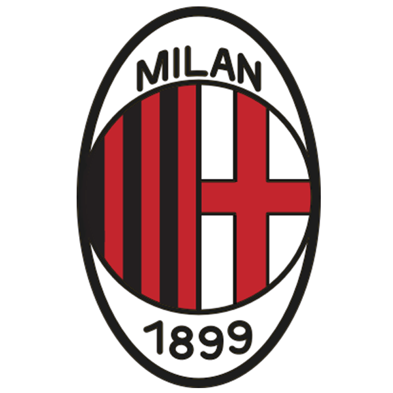

Información General
- Fundación: 16 de diciembre de 1899
- País: Italia
- Estadio: San Siro (Giuseppe Meazza)
Títulos Más Importantes
- 7 Copas de Europa / Champions League
- 19 Ligas Italianas (Serie A)
- 5 Copas de Italia
- 7 Supercopas de Italia
- 3 Copas Intercontinentales
Plantilla Destacada (2024–2025)
- Mike Maignan (Portero)
- Fikayo Tomori (Defensa)
- Theo Hernández (Defensa)
- Ismaël Bennacer (Mediocampista)
- Ruben Loftus-Cheek (Mediocampista)
- Christian Pulisic (Delantero)
- Rafael Leão (Delantero)
- Olivier Giroud (Delantero)
“Una vez milanista, siempre milanista.” – Paolo Maldini